Selecciona un ejercicio del menú para ver los detalles.
Algoritmos
Ejemplo 1.7 – Calcular (A + B)2 / 3
Construye un algoritmo que lea dos números enteros (A y B)
y calcule el resultado de la expresión ((A + B)^2) / 3.
Este ejercicio ayuda a practicar operaciones aritméticas básicas y el uso de variables en Java.
Datos y variables
Entrada: Dos valores enteros: A y B.
Salida: Un número real llamado RES con el resultado de la operación.
Implementación (Java)
import java.util.*;
public class Ejemplo1_7 {
public static double resolver(int A, int B) {
// Calcula (A + B)^2 / 3
return ((A + B) * (A + B)) / 3.0;
}
public static void main(String[] args) {
Scanner sc = new Scanner(System.in);
System.out.print("Ingresa el valor de A: ");
int A = sc.nextInt();
System.out.print("Ingresa el valor de B: ");
int B = sc.nextInt();
double resultado = resolver(A, B);
System.out.println("El resultado es: " + resultado);
}
}
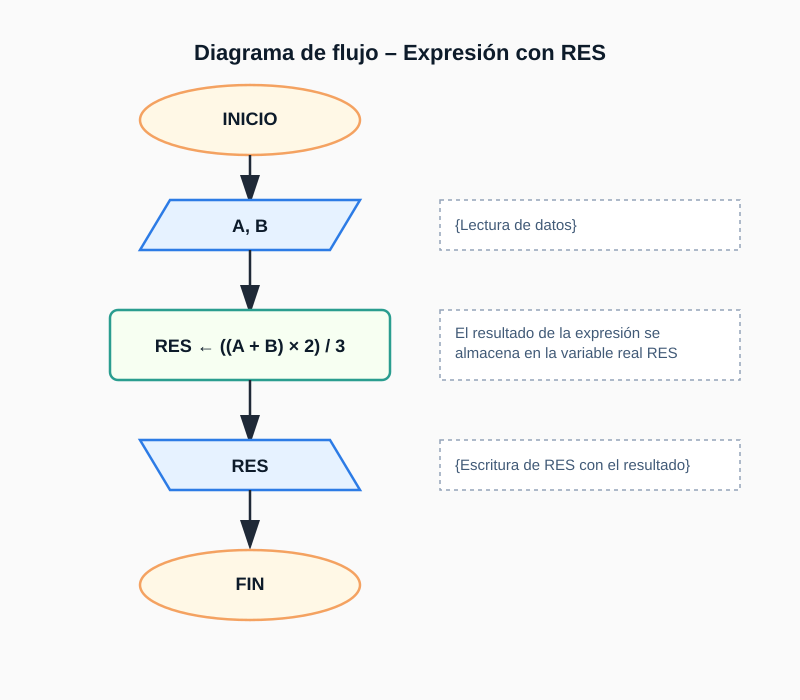
Figura: Diagrama de flujo del Ejemplo 1.7.
Algoritmos
Problema 1.8 – Distancia entre dos puntos
Calcule la distancia entre P1(x1, y1) y P2(x2, y2) usando la fórmula euclidiana.
Datos y variables
Entrada:X1, Y1, X2, Y2, Son variables tipo real que representan las coordenadas del punto P1 en el eje de las X y Y, respectivamente
Entrada:X2, Y2, Son variables tipo real que indican las coordenadas del puto P2 en el eje de las x y Y
Salida:D (real / double), Para calcualar la distancia entre dos puntos dados P1 y P2 vamos a aplicar la fórmula.
Fórmula
DIS = √((X1 - X2)^2 + (Y1 - Y2)^2)
Implementación (Java)
import java.util.*;
public class Problema1_8 {
public static double distancia(double x1,double y1,double x2,double y2){
double dx = x1 - x2, dy = y1 - y2;
return Math.sqrt(dx*dx + dy*dy);
}
public static void main(String[] args){
Scanner sc = new Scanner(System.in);
double x1 = sc.nextDouble(), y1 = sc.nextDouble();
double x2 = sc.nextDouble(), y2 = sc.nextDouble();
System.out.println(distancia(x1,y1,x2,y2));
}
}
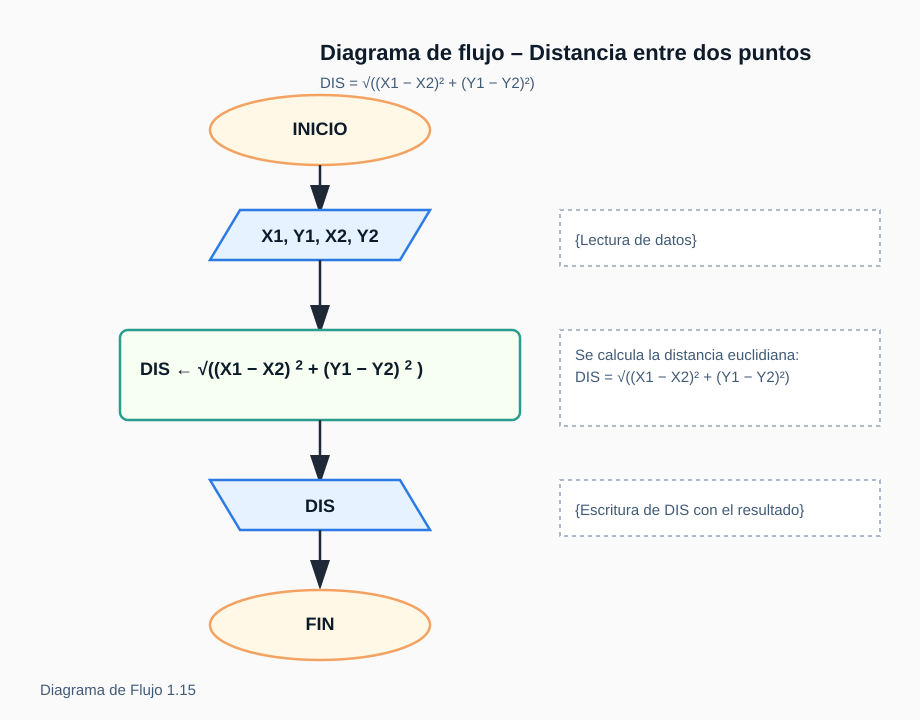
Figura: Diagrama de flujo del Problema 1.8.
Algoritmos
Problema 2.3 – Raíces reales de ax2 + bx + c = 0
Construya un algoritmo que, dados los coeficientes a, b y c de una ecuación cuadrática, determine sus raíces reales si existen.
Datos y variables
Entrada:a, b, c, son variables de tipo real.
DIS Variable de tipo real. Almacena el discriminante de la ecuación.
Salida:x1, Variables de tipo real. Almacena la primera raíz de la ecuación.
Salida:x1, Variable de tipo real. Almacena la segunda raiz de la ecuación.
import java.util.*;
public class Problema2_3 {
public static Optional<double[]> raices(double a, double b, double c){
if (a == 0) return Optional.empty(); // No es cuadrática
double dis = b*b - 4*a*c; // Discriminante
if (dis < 0) return Optional.empty(); // Raíces imaginarias
double r = Math.sqrt(dis);
return Optional.of(new double[]{(-b + r)/(2*a), (-b - r)/(2*a)});
}
public static void main(String[] args){
Scanner sc = new Scanner(System.in);
System.out.print("Introduce a, b y c: ");
double a = sc.nextDouble(), b = sc.nextDouble(), c = sc.nextDouble();
var op = raices(a, b, c);
if(op.isEmpty())
System.out.println("No hay raíces reales o no es ecuación cuadrática.");
else
System.out.println("x1 = " + op.get()[0] + " | x2 = " + op.get()[1]);
}
}
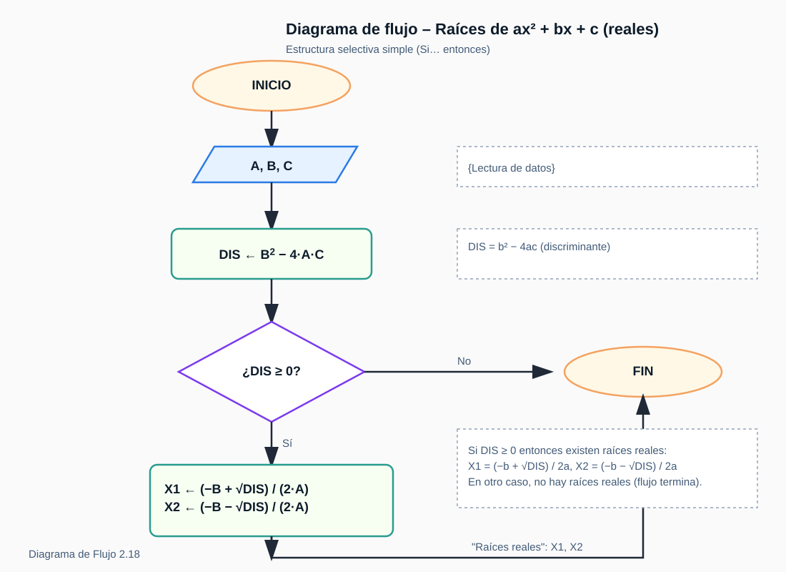
Figura: Diagrama de flujo del Problema 2.3.
Algoritmos
Ejemplo 3.5 – Cubo de números positivos (termina con -1)
Construya un algoritmo que lea una secuencia de números enteros positivos, calcule e imprima el cubo de cada uno.
El proceso termina cuando se introduce el número -1.
Datos y variables
Entrada: varios números enteros (long), finaliza con -1.
Salida: cubo (n³) de cada número positivo ingresado.
Pseudocódigo
leer X
mientras X ≠ -1 hacer
si X > 0 entonces
imprimir X³
fin si
leer X
fin mientras
Implementación (Java)
import java.util.*;
public class Ejemplo3_5 {
public static List<Long> cubosPositivos(List<Long> nums) {
List<Long> out = new ArrayList<>();
for (long n : nums)
if (n > 0) out.add(n * n * n); // calcula el cubo solo si es positivo
return out;
}
public static void main(String[] args) {
Scanner sc = new Scanner(System.in);
List<Long> entrada = new ArrayList<>();
System.out.println("Introduce números positivos (termina con -1):");
long x = sc.nextLong();
while (x != -1) { // centinela -1
entrada.add(x);
x = sc.nextLong();
}
System.out.println("Cubos calculados:");
for (long c : cubosPositivos(entrada))
System.out.println(c);
}
}
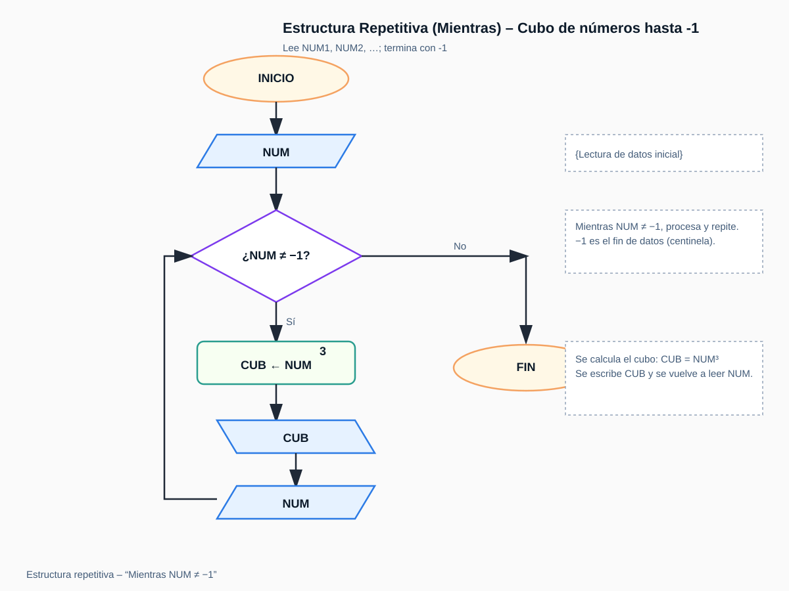
Figura: Diagrama de flujo del Ejemplo 3.5.
Algoritmos
Problema 3.16 – Producción de vinos (5 tipos, N años)
En una bodega se tiene información sobre las cantidades producidas de cada tipo de vino, a lo largo de los últimos años.
Construya un algoritmo que, dada una matriz V[1..N][1..5] con la producción anual de 5 tipos de vino durante N años,
calcule: (a) el total producido por cada tipo; (b) el total producido por cada año; (c) el año con mayor producción del tipo 2;
(d) los años donde el tipo 3 tuvo producción igual a 0.
anioMaxTipo2 y maxTipo2: año y valor máximo del tipo 2.
sinTipo3: lista de años con producción 0 del tipo 3.
Pseudocódigo
leer N
para j = 1..5: TIPO[j] ← 0
para i = 1..N: TOT[i] ← 0
# acumular totales por tipo y por año
para i = 1..N:
para j = 1..5:
TIPO[j] ← TIPO[j] + V[i][j]
TOT[i] ← TOT[i] + V[i][j]
# año con mayor producción del tipo 2
anioMaxTipo2 ← 1
maxTipo2 ← V[1][2]
para i = 2..N:
si V[i][2] > maxTipo2 entonces
maxTipo2 ← V[i][2]
anioMaxTipo2 ← i
# años con 0 en tipo 3
sinTipo3 ← []
para i = 1..N:
si V[i][3] = 0 entonces agregar i a sinTipo3
imprimir TIPO, TOT, anioMaxTipo2, maxTipo2, sinTipo3
Implementación (Java)
import java.util.*;
public class Problema3_16 {
// Matriz 1-indexada de conveniencia: V[1..N][1..5]
public static Map<String, Object> resolver(int[][] V, int N){
int[] tipo = new int[6]; // tipo[1..5]
int[] tot = new int[N+1]; // tot[1..N]
// (a) y (b) acumular
for(int i = 1; i <= N; i++){
for(int j = 1; j <= 5; j++){
tipo[j] += V[i][j];
tot[i] += V[i][j];
}
}
// (c) año de mayor producción del tipo 2
int anioMax = 1, max2 = V[1][2];
for(int i = 2; i <= N; i++){
if(V[i][2] > max2){
max2 = V[i][2];
anioMax = i;
}
}
// (d) años con 0 en tipo 3
List<Integer> sin3 = new ArrayList<>();
for(int i = 1; i <= N; i++){
if(V[i][3] == 0) sin3.add(i);
}
Map<String, Object> r = new HashMap<>();
r.put("tipo", tipo);
r.put("tot", tot);
r.put("anioMaxTipo2", anioMax);
r.put("maxTipo2", max2);
r.put("sinTipo3", sin3);
return r;
}
// Ejemplo rápido de uso por consola (opcional)
public static void main(String[] args){
Scanner sc = new Scanner(System.in);
int N = sc.nextInt();
int[][] V = new int[N+1][6];
for(int i=1;i<=N;i++){
for(int j=1;j<=5;j++) V[i][j] = sc.nextInt();
}
var r = resolver(V, N);
System.out.println("anioMaxTipo2=" + r.get("anioMaxTipo2") +
", maxTipo2=" + r.get("maxTipo2"));
System.out.println("sinTipo3=" + r.get("sinTipo3"));
}
}
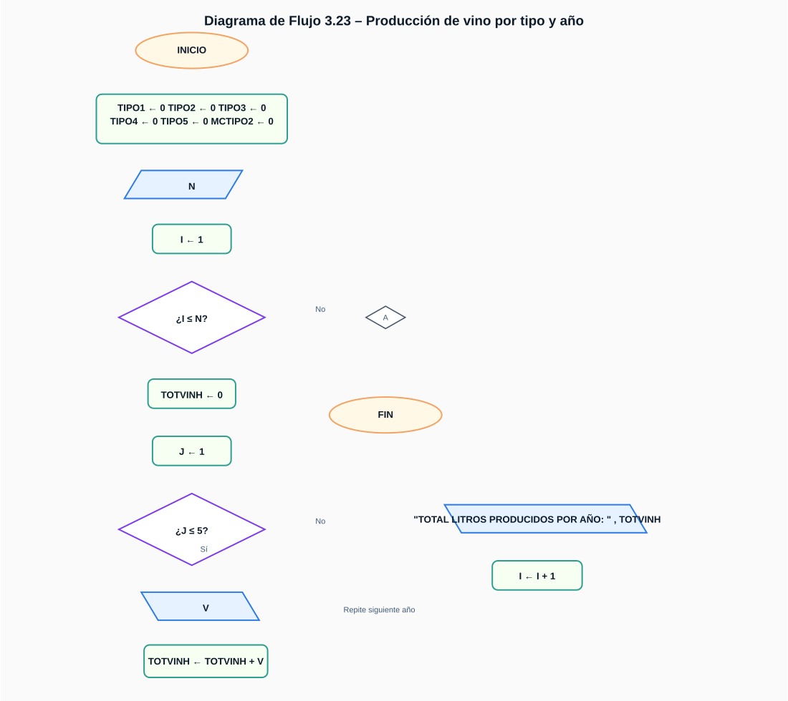
Figura: Diagrama de flujo del Problema 3.16.
Estructuras de datos: Arreglos
Problema 4.3 – Conteo de votos con 12 candidatos
Construya un algoritmo que lea una lista de votos representados por números del 1 al 12,
donde cada número corresponde a un candidato. El algoritmo debe contar los votos de cada candidato,
determinar quién obtuvo la mayor cantidad de votos y calcular su porcentaje respecto al total.
Datos y variables
Entrada: Lista de votos (valores enteros entre 1 y 12).
Salida:
V[1..12]: cantidad de votos por candidato.
ganador: número del candidato con más votos.
porcentaje: porcentaje de votos del candidato ganador.
Pseudocódigo
para i = 1 hasta 12 hacer
V[i] ← 0
fin para
leer voto
mientras voto ≠ 0 hacer
si 1 ≤ voto ≤ 12 entonces
V[voto] ← V[voto] + 1
fin si
leer voto
fin mientras
mayor ← V[1]
ganador ← 1
para i = 2 hasta 12 hacer
si V[i] > mayor entonces
mayor ← V[i]
ganador ← i
fin si
fin para
total ← suma de todos los V[i]
porcentaje ← (V[ganador] * 100) / total
imprimir ganador, porcentaje
Implementación (Java)
import java.util.*;
public class Problema4_3 {
// Función que cuenta los votos válidos (1..12)
public static int[] contarVotos(List<Integer> votos) {
int[] V = new int[13]; // índice 0 no se usa
for (int c : votos)
if (c >= 1 && c <= 12)
V[c]++;
return V;
}
// Devuelve el número del candidato ganador
public static int ganador(int[] V) {
int g = 1, mv = V[1];
for (int i = 2; i <= 12; i++)
if (V[i] > mv) {
mv = V[i];
g = i;
}
return g;
}
// Calcula el porcentaje de votos del ganador
public static double porcentajeGanador(int[] V) {
int tot = 0;
for (int i = 1; i <= 12; i++) tot += V[i];
return (tot == 0) ? 0 : (V[ganador(V)] * 100.0 / tot);
}
public static void main(String[] args) {
Scanner sc = new Scanner(System.in);
List<Integer> votos = new ArrayList<>();
System.out.println("Introduce votos (1 a 12). Termina con 0:");
int voto = sc.nextInt();
while (voto != 0) {
votos.add(voto);
voto = sc.nextInt();
}
int[] V = contarVotos(votos);
int g = ganador(V);
double porc = porcentajeGanador(V);
System.out.println("Candidato ganador: " + g);
System.out.printf("Porcentaje de votos: %.2f%%\n", porc);
}
}
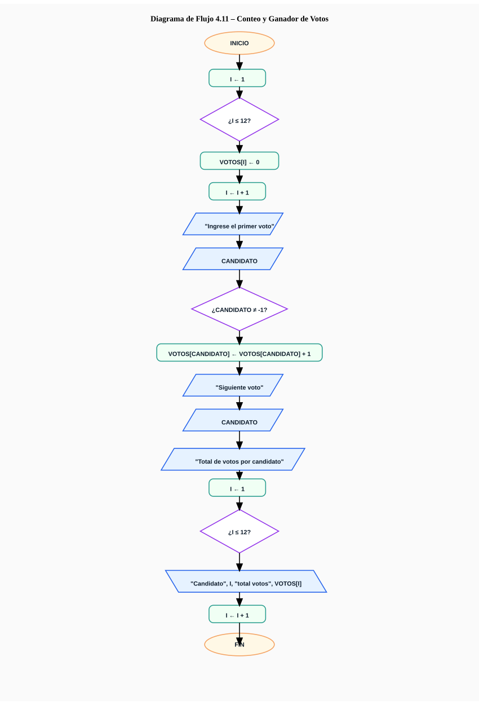
Figura: Diagrama de flujo del Problema 4.3.
Estructuras de datos: Arreglos
Problema 4.16 – Vector B a partir de matriz A(M×N)
Dada una matriz A de dimensiones M×N, construya un vector B[1..M] tal que:
si la fila i es impar, B[i] sea la suma de sus elementos; si la fila i es par,
B[i] sea la suma del producto elemento a elemento entre la fila i y la fila i−1.
Datos y variables
Entrada:M, N (enteros), y la matriz A[1..M][1..N] (enteros o largos).
Salida:B[1..M] donde:
Si i es impar: B[i] = Σ A[i,j] para j = 1..N.
Si i es par: B[i] = Σ (A[i,j] * A[i-1,j]) para j = 1..N.
Pseudocódigo
leer M, N
para i ← 1..M:
B[i] ← 0
si i MOD 2 = 0 entonces
# fila par: producto con la fila anterior
para j ← 1..N:
B[i] ← B[i] + A[i,j] * A[i-1,j]
sino
# fila impar: suma simple
para j ← 1..N:
B[i] ← B[i] + A[i,j]
imprimir B[1..M]
Implementación (Java)
import java.util.*;
public class Problema4_16 {
// Construye B usando índices 1..M y 1..N (estilo del algoritmo)
// Nota: el arreglo A debe declararse como A[M+1][N+1] y llenarse desde índice 1.
public static long[] construirB(long[][] A, int M, int N) {
long[] B = new long[M + 1]; // B[1..M]
for (int i = 1; i <= M; i++) {
long s = 0;
if (i % 2 == 0) { // fila par
for (int j = 1; j <= N; j++) s += A[i][j] * A[i - 1][j];
} else { // fila impar
for (int j = 1; j <= N; j++) s += A[i][j];
}
B[i] = s;
}
return B;
}
// Pequeño main para prueba desde consola (opcional)
// Formato entrada:
// M N
// (M filas con N enteros cada una)
public static void main(String[] args) {
Scanner sc = new Scanner(System.in);
int M = sc.nextInt(), N = sc.nextInt();
long[][] A = new long[M + 1][N + 1];
for (int i = 1; i <= M; i++)
for (int j = 1; j <= N; j++)
A[i][j] = sc.nextLong();
long[] B = construirB(A, M, N);
for (int i = 1; i <= M; i++) {
System.out.print(B[i]);
if (i < M) System.out.print(" ");
}
System.out.println();
}
}
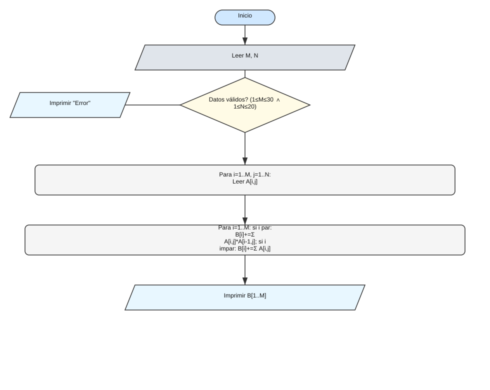
Figura: Diagrama de flujo del Problema 4.16.
Registros
Problema 5.4 – Empleados y Departamentos (búsqueda e inserción)
Se tienen dos arreglos de registros: EMPLE[1..NE] (ordenado por nom) con campos
nom, cladep, anti, sue y DEPA[1..ND] (ordenado por cladep) con campos
cladep, nomdep, numemp, nomjef. Realice:
(a) consultar por nombre de empleado; (b) mejor pagado por departamento (por nombre);
(c) insertar un nuevo empleado manteniendo el orden.
Datos y variables
Entrada:
Arreglo EMPLE de tamaño máximo (p.ej. 1000), con NE elementos usados (ordenado por nom ascendente).
Arreglo DEPA de tamaño máximo (p.ej. 20), con ND elementos usados (ordenado por cladep ascendente).
Operación y dato(s) de búsqueda/insertar.
Salida:
(a) Sueldo, departamento y jefe del empleado.
(b) Nombre y sueldo del empleado mejor pagado del departamento.
(c) Arreglo EMPLE actualizado y numemp del departamento incrementado.
Pseudocódigo
# a) Consulta por nombre de empleado
leer nombre
pos ← busquedaBinariaPorNombre(EMPLE, NE, nombre)
si pos = -1 entonces imprimir "No existe"
sino
c ← EMPLE[pos].cladep
k ← busquedaBinariaPorClave(DEPA, ND, c)
imprimir "Sueldo:", EMPLE[pos].sue
imprimir "Departamento:", DEPA[k].nomdep
imprimir "Jefe:", DEPA[k].nomjef
fin si
# b) Mejor pagado por nombre de departamento
leer nomDepto
idx ← buscarLinealDeptoPorNombre(DEPA, ND, nomDepto)
si idx = -1 entonces imprimir "Depto no existe"
sino
clave ← DEPA[idx].cladep
max ← -∞; nmejor ← ""
para i ← 0..NE-1:
si EMPLE[i].cladep = clave y EMPLE[i].sue > max entonces
max ← EMPLE[i].sue; nmejor ← EMPLE[i].nom
fin para
imprimir "Mejor pagado:", nmejor, "Sueldo:", max
fin si
# c) Insertar manteniendo orden por nom
leer nuevo (nom, cladep, anti, sue)
k ← posicionInsercion(EMPLE, NE, nuevo.nom) # por orden alfabético
desplazarDerecha(EMPLE, k, NE-1)
EMPLE[k] ← nuevo
NE ← NE + 1
idx ← busquedaBinariaPorClave(DEPA, ND, nuevo.cladep)
si idx ≠ -1 entonces DEPA[idx].numemp ← DEPA[idx].numemp + 1
imprimir "Insertado"
Implementación (Java)
import java.util.*;
public class Problema5_4 {
// ====== Modelos de datos ======
static class Emp { String nom; int cladep; int anti; double sue; }
static class Dep { int cladep; String nomdep; int numemp; String nomjef; }
// ====== Utilidades de búsqueda (arrays 0..NE-1 / 0..ND-1) ======
// Comparación por nombre (ignorando mayúsculas/minúsculas)
static int compareIgnoreCase(String a, String b){
return a.compareToIgnoreCase(b);
}
// Búsqueda binaria por nombre en EMPLE (ordenado ascendente por nom)
static int busquedaBinariaPorNombre(Emp[] emple, int ne, String nom){
int lo = 0, hi = ne - 1;
while (lo <= hi) {
int mid = (lo + hi) >>> 1;
int cmp = compareIgnoreCase(emple[mid].nom, nom);
if (cmp == 0) return mid;
if (cmp < 0) lo = mid + 1; else hi = mid - 1;
}
return -1;
}
// Posición de inserción manteniendo orden ascendente por nom
static int posicionInsercion(Emp[] emple, int ne, String nom){
int lo = 0, hi = ne;
while (lo < hi) {
int mid = (lo + hi) >>> 1;
if (compareIgnoreCase(emple[mid].nom, nom) < 0) lo = mid + 1;
else hi = mid;
}
return lo; // índice donde insertar
}
// Búsqueda binaria por cladep en DEPA (ordenado ascendente por cladep)
static int busquedaBinariaPorClave(Dep[] depa, int nd, int clave){
int lo = 0, hi = nd - 1;
while (lo <= hi) {
int mid = (lo + hi) >>> 1;
if (depa[mid].cladep == clave) return mid;
if (depa[mid].cladep < clave) lo = mid + 1; else hi = mid - 1;
}
return -1;
}
// Búsqueda lineal por nombre de depto (ND es pequeño, p.ej. ≤ 20)
static int buscarLinealDeptoPorNombre(Dep[] depa, int nd, String nomDepto){
for (int i = 0; i < nd; i++) {
if (depa[i].nomdep.equalsIgnoreCase(nomDepto)) return i;
}
return -1;
}
// ====== (a) Consulta empleado ======
public static String consultaEmpleado(Emp[] emple, int ne, Dep[] depa, int nd, String nom){
int pos = busquedaBinariaPorNombre(emple, ne, nom);
if (pos == -1) return "No existe";
Emp e = emple[pos];
int idx = busquedaBinariaPorClave(depa, nd, e.cladep);
if (idx == -1) return "Departamento no encontrado para la clave " + e.cladep;
Dep d = depa[idx];
return "Sueldo: " + e.sue + " | Departamento: " + d.nomdep + " | Jefe: " + d.nomjef;
}
// ====== (b) Mejor pagado por departamento (por nombre de depto) ======
public static String mejorPagadoPorDepto(Emp[] emple, int ne, Dep[] depa, int nd, String nombreDepto){
int idx = buscarLinealDeptoPorNombre(depa, nd, nombreDepto);
if (idx == -1) return "Depto no existe";
int clave = depa[idx].cladep;
double max = -1.0;
String nmejor = "";
for (int i = 0; i < ne; i++) {
if (emple[i].cladep == clave && emple[i].sue > max) {
max = emple[i].sue; nmejor = emple[i].nom;
}
}
if (nmejor.isEmpty()) return "Sin empleados en el departamento " + nombreDepto;
return "Mejor pagado: " + nmejor + " | Sueldo: " + max;
}
// ====== (c) Insertar empleado manteniendo orden por nom y actualizar numemp ======
// Retorna el nuevo NE
public static int insertar(Emp[] emple, int ne, Dep[] depa, int nd, Emp nuevo){
// Encontrar posición de inserción por nombre
int k = posicionInsercion(emple, ne, nuevo.nom);
// Desplazar a la derecha para abrir espacio [k..ne-1] -> [k+1..ne]
for (int i = ne - 1; i >= k; i--) emple[i + 1] = emple[i];
// Insertar
emple[k] = nuevo;
ne++;
// Actualizar contador del departamento
int idx = busquedaBinariaPorClave(depa, nd, nuevo.cladep);
if (idx != -1) depa[idx].numemp += 1;
return ne;
}
}
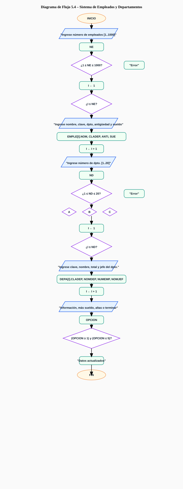
Figura: Diagrama de flujo del Problema 5.4.
Problemas Sugeridos
PS 2.8 – ¿NUM1 es divisor de NUM2?
Determina si NUM1 divide exactamente a NUM2 usando el operador módulo.
Datos y variables
Entrada:NUM1, NUM2 (enteros).
Salida: Mensaje: “Sí es divisor” o “No es divisor”. Si NUM1 = 0, imprimir “Indefinido”.
Pseudocódigo
leer NUM1, NUM2
si NUM1 = 0 entonces
imprimir "Indefinido"
sino
si NUM2 MOD NUM1 = 0 entonces
imprimir "Sí es divisor"
sino
imprimir "No es divisor"
fin si
fin si
Implementación (Java)
import java.util.*;
public class PS2_8 {
public static String resolver(int num1, int num2){
if (num1 == 0) return "Indefinido"; // división entre 0 no existe
return (num2 % num1 == 0) ? "Sí es divisor" : "No es divisor";
}
public static void main(String[] args){
Scanner sc = new Scanner(System.in);
int num1 = sc.nextInt();
int num2 = sc.nextInt();
System.out.println(resolver(num1, num2));
}
}
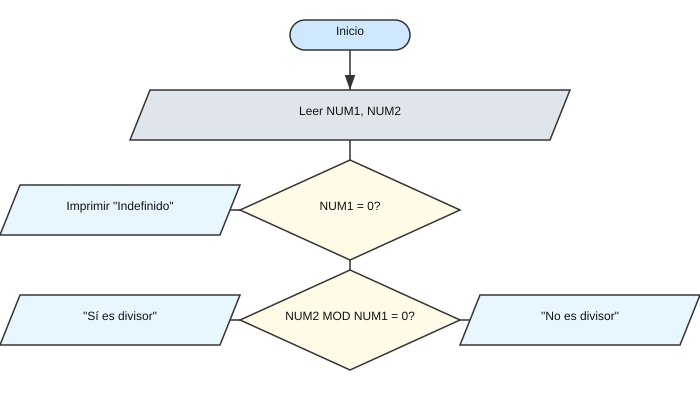
Figura: Diagrama de flujo de PS 2.8.
Problemas Sugeridos
PS 2.9 – Comprobar A-N = 1 / AN (A ≠ 0)
Este problema verifica si la identidad matemática A-N = 1 / AN se cumple para un número real A distinto de cero y un exponente entero N.
Datos y variables
Entrada:
A – número real (base, distinto de 0).
N – número entero (exponente).
Salida: Mensaje indicando si la igualdad se cumple: "Iguales" o "Diferentes".
Pseudocódigo
leer A, N
si A = 0 entonces
imprimir "No se puede calcular, A no puede ser cero"
sino
izq ← A elevado a (-N)
der ← 1 / (A elevado a N)
si |izq - der| < 1E-9 entonces
imprimir "Iguales"
sino
imprimir "Diferentes"
fin si
fin si
Implementación (Java)
import java.util.*;
public class PS2_9 {
// Verifica si A^-N = 1 / A^N con tolerancia de error 'eps'
public static boolean identidad(double A, int N, double eps) {
if (A == 0) return false; // Evita división entre 0
double izq = Math.pow(A, -N); // A elevado a -N
double der = 1.0 / Math.pow(A, N); // 1 dividido entre A^N
return Math.abs(izq - der) < eps; // Compara con margen de error
}
public static void main(String[] args) {
Scanner sc = new Scanner(System.in);
double A = sc.nextDouble();
int N = sc.nextInt();
if (A == 0) System.out.println("A no puede ser 0");
else System.out.println(identidad(A, N, 1e-9) ? "Iguales" : "Diferentes");
}
}
Figura: Diagrama de flujo de PS 2.9.
Problemas Sugeridos
PS 2.10 – Comprobar (A/B)N = AN / BN
Verifica la identidad de potencias en un cociente: elevar el cociente A/B a N debe ser igual a elevar
A y B por separado y dividir los resultados.
Datos y variables
Entrada:
A – número real (base del numerador).
B – número real (base del denominador, B ≠ 0).
N – número entero (exponente, puede ser negativo, cero o positivo).
Salida: Mensaje: "Iguales" si se cumple, de lo contrario "Diferentes".
Pseudocódigo
leer A, B, N
si B = 0 entonces
imprimir "Entrada no válida (B no puede ser 0)"
sino si (N < 0) y (A = 0) entonces
# 0^(-N) es indefinido (implicaría dividir entre 0)
imprimir "Entrada no válida (A = 0 con exponente negativo)"
sino
izq ← (A / B) elevado a N
der ← (A elevado a N) / (B elevado a N)
si |izq - der| < 1E-9 entonces
imprimir "Iguales"
sino
imprimir "Diferentes"
fin si
fin si
Implementación (Java)
import java.util.*;
public class PS2_10 {
// Verifica si (A/B)^N = A^N / B^N usando una tolerancia 'eps'
public static boolean identidad(double A, double B, int N, double eps) {
if (B == 0) return false; // división entre 0
if (N < 0 && A == 0) return false; // 0^(-N) es indefinido
double izq = Math.pow(A / B, N);
double der = Math.pow(A, N) / Math.pow(B, N);
return Math.abs(izq - der) < eps;
}
public static void main(String[] args) {
Scanner sc = new Scanner(System.in);
double A = sc.nextDouble(), B = sc.nextDouble();
int N = sc.nextInt();
if (B == 0) {
System.out.println("Entrada no válida (B no puede ser 0)");
} else if (N < 0 && A == 0) {
System.out.println("Entrada no válida (A = 0 con exponente negativo)");
} else {
System.out.println(identidad(A, B, N, 1e-9) ? "Iguales" : "Diferentes");
}
}
}
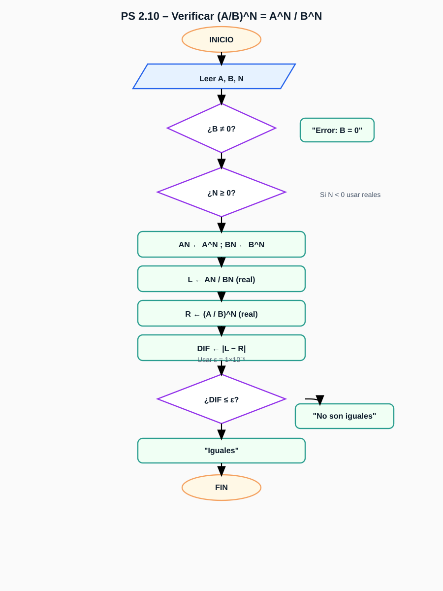
Figura: Diagrama de flujo de PS 2.10.
Problemas Sugeridos
PS 2.11 – Función por tramos de X(Y)
Evalúa la función X(Y) definida por tramos según el valor de Y.
Datos y variables
Entrada:Y (entero o real; aquí usaremos entero para coincidir con el ejemplo).
Salida:X (entero o long) calculado según el tramo donde cae Y.
Definición por tramos:
X = 3*Y + 36 si 0 < Y ≤ 11
X = Y^2 - 10 si 11 < Y ≤ 33
X = Y^3 + Y^2 - 1 si 33 < Y ≤ 64
X = 0 en cualquier otro caso
Pseudocódigo
leer Y
si (0 < Y ≤ 11) entonces
X ← 3*Y + 36
sino si (11 < Y ≤ 33) entonces
X ← Y^2 - 10
sino si (33 < Y ≤ 64) entonces
X ← Y^3 + Y^2 - 1
sino
X ← 0
fin si
imprimir X
Implementación (Java)
import java.util.*;
public class PS2_11 {
public static long X(long Y) {
if (Y > 0 && Y <= 11) {
return 3*Y + 36;
} else if (Y > 11 && Y <= 33) {
return Y*Y - 10;
} else if (Y > 33 && Y <= 64) {
return Y*Y*Y + Y*Y - 1;
} else {
return 0;
}
}
public static void main(String[] args) {
Scanner sc = new Scanner(System.in);
long Y = sc.nextLong();
System.out.println(X(Y));
}
}
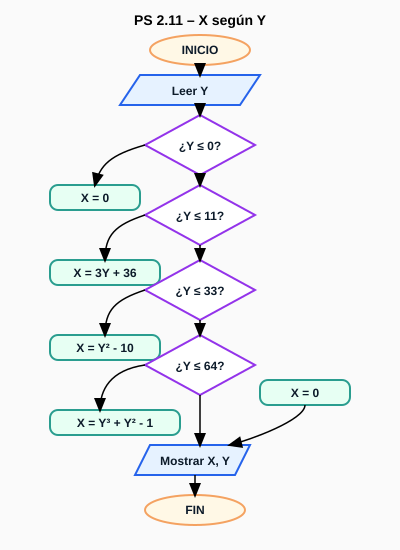
Figura: Diagrama de flujo de PS 2.11.
Problemas Sugeridos
PS 3.27 – Estadística de alumnos
Dado un grupo de alumnos con matrícula, sexo, semestre y promedio, calcule:
(a) matrícula y mayor promedio de mujeres; (b) matrícula y mayor promedio de hombres;
(c) promedio por semestre para 1°, 3°, 5° y 7°.
Salida:
matrícula y mayor promedio de mujeres (matF, maxF);
matrícula y mayor promedio de hombres (matM, maxM);
promedios de 1°, 3°, 5° y 7° (prom1, prom3, prom5, prom7).
Pseudocódigo
leer N
inicializar: maxF ← -1, matF ← "", maxM ← -1, matM ← ""
s1 ← 0, c1 ← 0; s3 ← 0, c3 ← 0; s5 ← 0, c5 ← 0; s7 ← 0, c7 ← 0
para i ← 0..N-1 hacer
leer MAT[i], SEX[i], SEM[i], PRO[i]
si SEX[i] = 0 y PRO[i] > maxF entonces
maxF ← PRO[i]; matF ← MAT[i]
fin si
si SEX[i] = 1 y PRO[i] > maxM entonces
maxM ← PRO[i]; matM ← MAT[i]
fin si
segun SEM[i] hacer
1: s1 ← s1 + PRO[i]; c1 ← c1 + 1
3: s3 ← s3 + PRO[i]; c3 ← c3 + 1
5: s5 ← s5 + PRO[i]; c5 ← c5 + 1
7: s7 ← s7 + PRO[i]; c7 ← c7 + 1
fin segun
fin para
si c1 > 0 entonces prom1 ← s1 / c1 sino prom1 ← 0
si c3 > 0 entonces prom3 ← s3 / c3 sino prom3 ← 0
si c5 > 0 entonces prom5 ← s5 / c5 sino prom5 ← 0
si c7 > 0 entonces prom7 ← s7 / c7 sino prom7 ← 0
imprimir matF, maxF; imprimir matM, maxM
imprimir prom1, prom3, prom5, prom7
Implementación (Java)
import java.util.*;
public class ps3_27 {
public static class Res {
String matF, matM; double maxF, maxM;
double prom1, prom3, prom5, prom7;
}
public static Res resolver(int N, List<String> MAT, List<Integer> SEX,
List<Integer> SEM, List<Double> PRO) {
Res r = new Res();
double s1 = 0, s3 = 0, s5 = 0, s7 = 0;
int c1 = 0, c3 = 0, c5 = 0, c7 = 0;
r.maxF = -1; r.maxM = -1;
for (int i = 0; i < N; i++) {
int sex = SEX.get(i), sem = SEM.get(i);
double pro = PRO.get(i);
if (sex == 0 && pro > r.maxF) { r.maxF = pro; r.matF = MAT.get(i); }
if (sex == 1 && pro > r.maxM) { r.maxM = pro; r.matM = MAT.get(i); }
if (sem == 1) { s1 += pro; c1++; }
else if (sem == 3) { s3 += pro; c3++; }
else if (sem == 5) { s5 += pro; c5++; }
else if (sem == 7) { s7 += pro; c7++; }
}
r.prom1 = (c1 == 0) ? 0 : s1 / c1;
r.prom3 = (c3 == 0) ? 0 : s3 / c3;
r.prom5 = (c5 == 0) ? 0 : s5 / c5;
r.prom7 = (c7 == 0) ? 0 : s7 / c7;
return r;
}
}
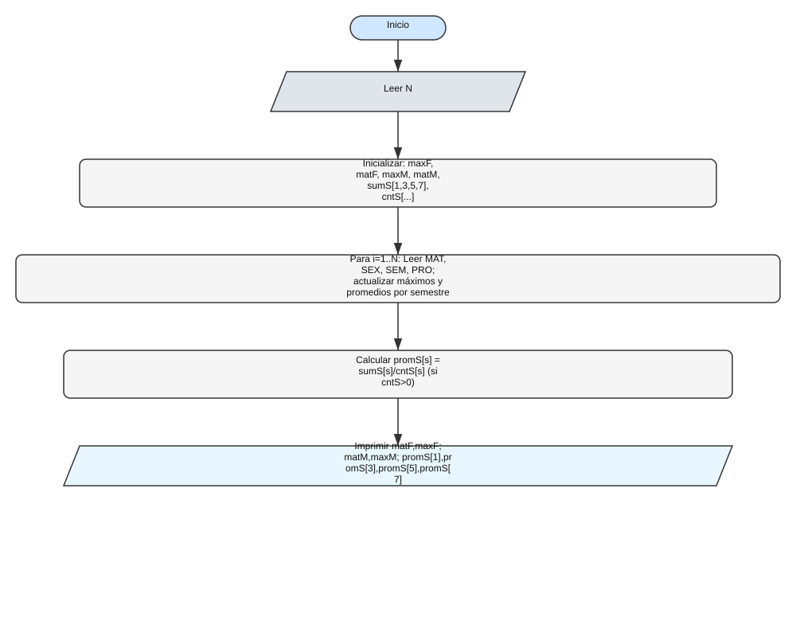
Figura: Diagrama de flujo de PS 3.27.
Problemas Sugeridos
PS 3.28 – Censo de empleados
Con N empleados y datos CLAVEi, EDADi, SEXOi (1=hombre, 0=mujer),
SUELDOi, calcule: (a) #hombres; (b) #mujeres; (c) #mujeres > $20,000;
(d) #hombres < 40 con sueldo < $40,000; (e) #empleados > 50 años.
Datos y variables
Entrada:N; arreglos paralelos de tamaño N:
CLAVE[i] (int), EDAD[i] (int), SEXO[i] (int: 1=hombre, 0=mujer),
SUELDO[i] (int o double).
Salida: contadores
h (hombres), m (mujeres), m20 (mujeres > 20000),
hMen40Men40k (hombres < 40 y sueldo < 40000), may50 (> 50 años).
Pseudocódigo
leer N
h ← 0; m ← 0; m20 ← 0; hMen40Men40k ← 0; may50 ← 0
para i ← 0..N-1 hacer
leer CLAVE[i], EDAD[i], SEXO[i], SUELDO[i]
si SEXO[i] = 1 entonces
h ← h + 1
si EDAD[i] < 40 y SUELDO[i] < 40000 entonces hMen40Men40k ← hMen40Men40k + 1
sino
m ← m + 1
si SUELDO[i] > 20000 entonces m20 ← m20 + 1
fin si
si EDAD[i] > 50 entonces may50 ← may50 + 1
fin para
imprimir h, m, m20, hMen40Men40k, may50
Implementación (Java)
public class ps3_28 {
public static int[] resolver(int N, int[] CLAVE, int[] EDAD, int[] SEXO, int[] SUELDO) {
int h = 0, m = 0, m20 = 0, hMen40Men40k = 0, may50 = 0;
for (int i = 0; i < N; i++) {
if (SEXO[i] == 1) {
h++;
if (EDAD[i] < 40 && SUELDO[i] < 40000) hMen40Men40k++;
} else {
m++;
if (SUELDO[i] > 20000) m20++;
}
if (EDAD[i] > 50) may50++;
}
return new int[]{ h, m, m20, hMen40Men40k, may50 };
}
}
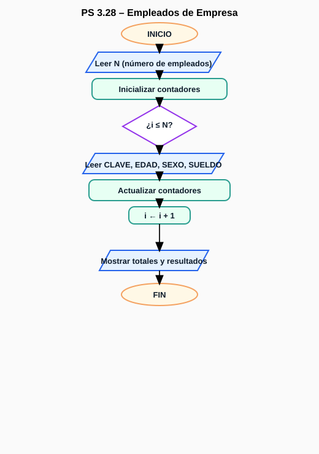
Figura: Diagrama de flujo de PS 3.28.
Problemas Sugeridos
PS 3.29 – Estadística UNICEF de orfanatos
Para N niños con EST[i] (Estado) y EDAD[i] (años), calcule:
(a) porcentaje de niños del Estado de México + CDMX sobre el total;
(b) conteo por grupos: G1 (< 1), G2 (1–3), G3 (4–6), G4 (> 6);
(c) el grupo con mayor cantidad.
Datos y variables
Entrada:N; arreglos paralelos EST[i] (String), EDAD[i] (double) para i = 0..N-1.
leer N
tot ← 0; mexdf ← 0
g1 ← 0; g2 ← 0; g3 ← 0; g4 ← 0
para i ← 0..N-1 hacer
tot ← tot + 1
si EST[i] ∈ { "MEXICO", "MÉXICO", "ESTADO DE MÉXICO", "CIUDAD DE MÉXICO", "CDMX", "DF" } entonces
mexdf ← mexdf + 1
fin si
si EDAD[i] < 1 entonces g1 ← g1 + 1
sino si EDAD[i] ≤ 3 entonces g2 ← g2 + 1
sino si EDAD[i] ≤ 6 entonces g3 ← g3 + 1
sino g4 ← g4 + 1
fin para
porcentaje ← (mexdf / tot) * 100 # si tot = 0, porcentaje ← 0
# grupo con mayor cantidad
max ← g1; grupoMax ← "G1"
si g2 > max entonces max ← g2; grupoMax ← "G2"
si g3 > max entonces max ← g3; grupoMax ← "G3"
si g4 > max entonces max ← g4; grupoMax ← "G4"
imprimir porcentaje, g1, g2, g3, g4, grupoMax
Implementación (Java)
import java.util.*;
public class ps3_29 {
public static class Res {
double porcentaje; int g1, g2, g3, g4; String grupoMax;
}
static boolean esMexDf(String est){
String s = est == null ? "" : est.toUpperCase(Locale.ROOT).trim();
return s.equals("MEXICO") || s.equals("MÉXICO") ||
s.equals("ESTADO DE MÉXICO") || s.equals("CIUDAD DE MÉXICO") ||
s.equals("CDMX") || s.equals("DF");
}
public static Res resolver(int N, String[] EST, double[] EDAD){
int tot = 0, mexdf = 0, g1 = 0, g2 = 0, g3 = 0, g4 = 0;
for(int i=0;i<N;i++){
tot++;
if(esMexDf(EST[i])) mexdf++;
double e = EDAD[i];
if(e < 1) g1++;
else if(e <= 3) g2++;
else if(e <= 6) g3++;
else g4++;
}
int max = g1; String maxG = "G1";
if(g2 > max){ max = g2; maxG = "G2"; }
if(g3 > max){ max = g3; maxG = "G3"; }
if(g4 > max){ max = g4; maxG = "G4"; }
Res r = new Res();
r.porcentaje = (tot == 0) ? 0 : (mexdf * 100.0 / tot);
r.g1 = g1; r.g2 = g2; r.g3 = g3; r.g4 = g4; r.grupoMax = maxG;
return r;
}
}
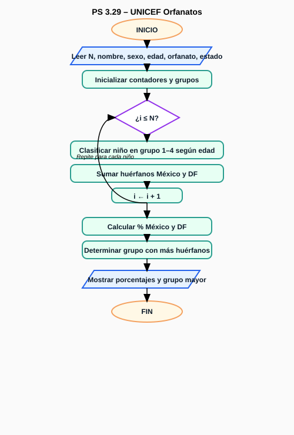
Figura: Diagrama de flujo de PS 3.29.
Estructuras de datos: Arreglos
PS 4.5 – Frecuencia de calificaciones (0..10) en 250 alumnos
Dado un grupo de 250 alumnos, calcula cuántos obtuvieron cada calificación posible (0 a 10) y almacena la frecuencia en un arreglo.
Datos y variables
Entrada: Arreglo ALU[250] con las calificaciones (enteros entre 0 y 10).
Salida: Arreglo F[11] donde cada posición representa la frecuencia de una calificación.
Ejemplo: Si 4 alumnos tienen 10, entonces F[10] = 4.
Pseudocódigo
# Inicializa frecuencias en 0
para i ← 0 hasta 10 hacer
F[i] ← 0
fin para
# Recorre las calificaciones
para cada calificación x en ALU hacer
si 0 ≤ x ≤ 10 entonces
F[x] ← F[x] + 1
fin si
fin para
# Imprime las frecuencias
para i ← 0 hasta 10 hacer
imprimir "Calificación", i, "→", F[i]
fin para
Implementación (Java)
import java.util.*;
public class PS4_5 {
public static int[] frecuencias(int[] ALU) {
int[] F = new int[11]; // índices 0..10
for (int x : ALU) {
if (x >= 0 && x <= 10) F[x]++; // cuenta solo valores válidos
}
return F;
}
public static void main(String[] args) {
Scanner sc = new Scanner(System.in);
int[] ALU = new int[250];
System.out.println("Ingrese 250 calificaciones (0 a 10):");
for (int i = 0; i < 250; i++) {
ALU[i] = sc.nextInt();
}
int[] F = frecuencias(ALU);
for (int i = 0; i <= 10; i++) {
System.out.println("Calificación " + i + " → " + F[i] + " alumnos");
}
}
}
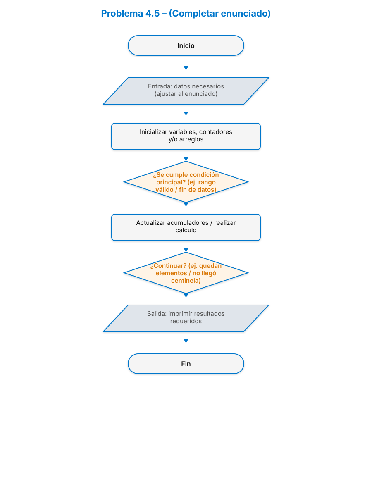
Figura: Diagrama de flujo de PS 4.5.
Estructuras de datos: Arreglos 2D
PS 4.21 – Temperaturas diarias (12×31) en CDMX
Dado TEMP[1..12][1..31] con temperaturas promedio diarias del año anterior en CDMX,
calcula: (a) la temperatura máxima y su día/mes; (b) el mes con mayor promedio;
(c) el promedio mensual de temperaturas.
Datos y variables
Entrada: Matriz TEMP[1..12][1..31] (reales; usa solo días válidos por mes).
Salida:
maxT (máxima global), diaMax, mesMax.
PROM[1..12] (promedios mensuales).
mesPromMax y valPromMax (mes con mayor promedio y su valor).
Soporte:DIAS[1..12] = [31,28,31,30,31,30,31,31,30,31,30,31] (ajusta febrero a 29 si fue bisiesto).
Pseudocódigo
# Inicializa
maxT ← -∞; diaMax ← 1; mesMax ← 1
para m ← 1..12: PROM[m] ← 0
# (a) Recorre para máxima global y para acumular suma mensual
para m ← 1..12:
suma ← 0
para d ← 1..DIAS[m]:
t ← TEMP[m][d]
si t > maxT entonces
maxT ← t; diaMax ← d; mesMax ← m
fin si
suma ← suma + t
fin para
PROM[m] ← suma / DIAS[m]
fin para
# (b) Mes con mayor promedio
mesPromMax ← 1; valPromMax ← PROM[1]
para m ← 2..12:
si PROM[m] > valPromMax entonces
mesPromMax ← m; valPromMax ← PROM[m]
fin si
fin para
# (c) Imprime resultados
imprimir "Máxima:", maxT, "día:", diaMax, "mes:", mesMax
imprimir "Promedios mensuales:", PROM[1..12]
imprimir "Mes con mayor promedio:", mesPromMax, valPromMax
Implementación (Java)
public class PS4_21 {
public static class Res {
double max; int diaMax, mesMax;
double[] promMes; int mesPromMax; double valPromMax;
}
public static Res resolver(double[][] TEMP, boolean bisiesto) {
int[] DIAS = {0,31,28,31,30,31,30,31,31,30,31,30,31};
if (bisiesto) DIAS[2] = 29;
Res r = new Res();
r.max = -1e18;
r.promMes = new double[13];
for (int m = 1; m <= 12; m++) {
double suma = 0;
for (int d = 1; d <= DIAS[m]; d++) {
double t = TEMP[m][d];
if (t > r.max) { r.max = t; r.diaMax = d; r.mesMax = m; }
suma += t;
}
r.promMes[m] = suma / DIAS[m];
}
r.mesPromMax = 1; r.valPromMax = r.promMes[1];
for (int m = 2; m <= 12; m++) {
if (r.promMes[m] > r.valPromMax) {
r.mesPromMax = m; r.valPromMax = r.promMes[m];
}
}
return r;
}
}
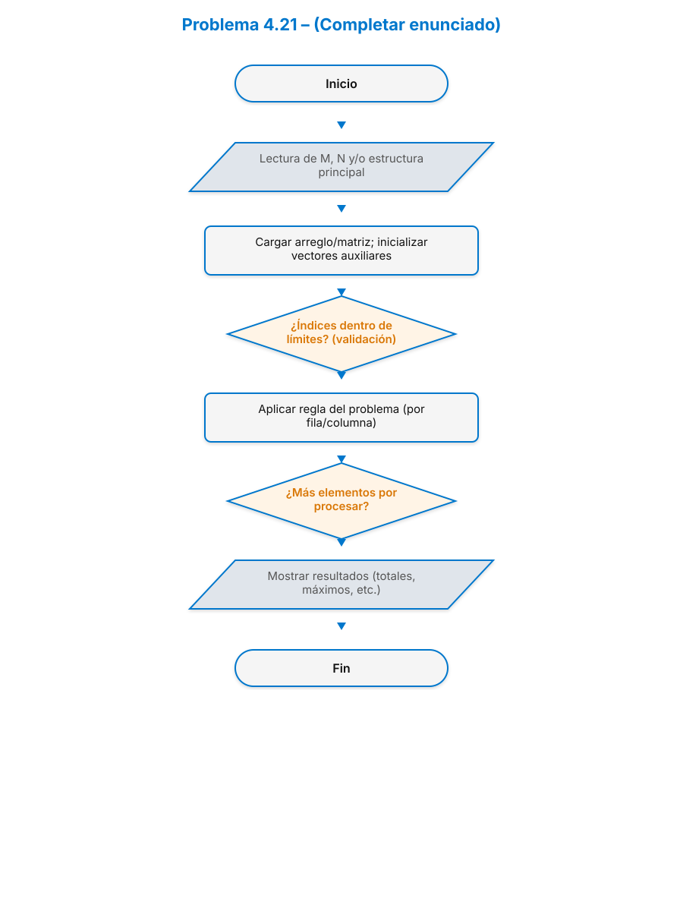
Figura: Diagrama de flujo de PS 4.21.
Arreglos + Operaciones
PS 4.37 – Centros turísticos y habitaciones
Se tienen dos arreglos: CT[1..N] con nombres de centros (ordenado ascendente) y
HAB[1..2N] tal que para el centro i, HAB[2*i-1] son habitaciones
simples y HAB[2*i] son habitaciones dobles. Realiza operaciones según
CLAVE ∈ {L, R, I, M}.
Datos y variables
Entrada:
CT[1..N] (cadenas, ordenado A–Z).
HAB[1..2N] (enteros ≥ 0): simples y dobles intercalados por centro.
CLAVE (carácter): L, R, I o M.
Salida: Depende de la operación:
L: lista todos los nombres.
R: para un centro dado, reporta simples, dobles y total.
I: inserta un nuevo centro en orden y sus dos conteos.
M: muestra el centro con mayor total de habitaciones (simples + dobles).
Pseudocódigo
func indiceCentroPorNombre(CT, N, nombre):
izq ← 1; der ← N
mientras izq ≤ der:
mid ← (izq + der) // 2
si CT[mid] = nombre entonces retornar mid
si nombre < CT[mid] entonces der ← mid - 1
sino izq ← mid + 1
fin mientras
retornar -1
# L: listar todos los centros
si CLAVE = 'L' entonces
para i ← 1..N: imprimir CT[i]
# R: reporte de un centro por nombre
si CLAVE = 'R' entonces
leer nom
pos ← indiceCentroPorNombre(CT, N, nom)
si pos = -1 entonces imprimir "Centro no encontrado"
sino
s ← HAB[2*pos - 1]; d ← HAB[2*pos]
imprimir "Simples:", s, "Dobles:", d, "Total:", s + d
# I: insertar nuevo centro en orden
si CLAVE = 'I' entonces
leer nomNuevo, simples, dobles
k ← 1
mientras k ≤ N y CT[k] < nomNuevo: k ← k + 1
para i ← N downto k: CT[i+1] ← CT[i] # desplazar nombres
para i ← 2*N downto 2*k: HAB[i+2] ← HAB[i] # desplazar 2 posiciones
CT[k] ← nomNuevo
HAB[2*k - 1] ← simples; HAB[2*k] ← dobles
N ← N + 1
imprimir "Insertado en posición", k
# M: centro con más habitaciones totales
si CLAVE = 'M' entonces
mejor ← 1; mejorTot ← HAB[1] + HAB[2]
para i ← 2..N:
tot ← HAB[2*i - 1] + HAB[2*i]
si tot > mejorTot entonces mejor ← i; mejorTot ← tot
fin para
imprimir "Centro con más habitaciones:", CT[mejor], "Total:", mejorTot
Implementación (Java)
import java.util.*;
public class PS4_37 {
public static int indiceCentroPorNombre(String[] CT, int N, String nombre){
int izq = 1, der = N;
while (izq <= der) {
int mid = (izq + der) / 2;
int cmp = CT[mid].compareToIgnoreCase(nombre);
if (cmp == 0) return mid;
if (cmp > 0) der = mid - 1; else izq = mid + 1;
}
return -1;
}
public static void listar(String[] CT, int N){
for (int i = 1; i <= N; i++) System.out.println(CT[i]);
}
public static String reporte(String[] CT, int N, int[] HAB, String nom){
int pos = indiceCentroPorNombre(CT, N, nom);
if (pos == -1) return "Centro no encontrado";
int s = HAB[2*pos - 1], d = HAB[2*pos];
return "Simples: " + s + " Dobles: " + d + " Total: " + (s + d);
}
public static int insertar(String[] CT, int N, int[] HAB, String nom, int simples, int dobles){
int k = 1;
while (k <= N && CT[k].compareToIgnoreCase(nom) < 0) k++;
for (int i = N; i >= k; i--) CT[i+1] = CT[i];
for (int i = 2*N; i >= 2*k; i--) HAB[i+2] = HAB[i];
CT[k] = nom;
HAB[2*k - 1] = simples; HAB[2*k] = dobles;
return N + 1;
}
public static String mayor(String[] CT, int N, int[] HAB){
int best = 1, bestTot = HAB[1] + HAB[2];
for (int i = 2; i <= N; i++) {
int tot = HAB[2*i - 1] + HAB[2*i];
if (tot > bestTot) { best = i; bestTot = tot; }
}
return CT[best] + " Total: " + bestTot;
}
}